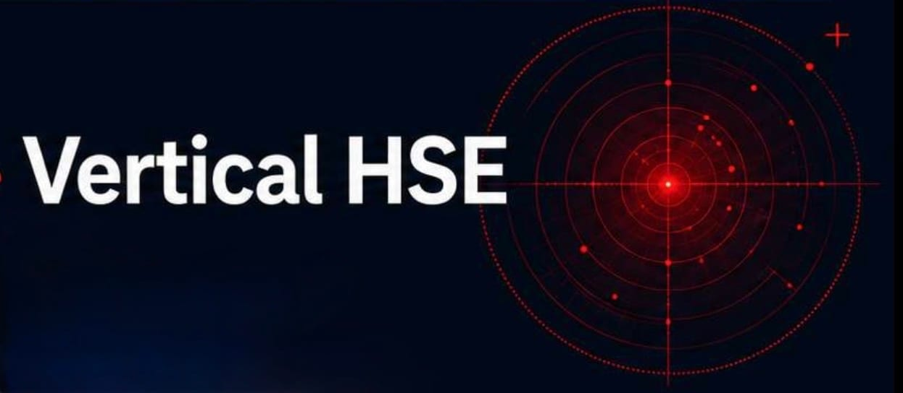
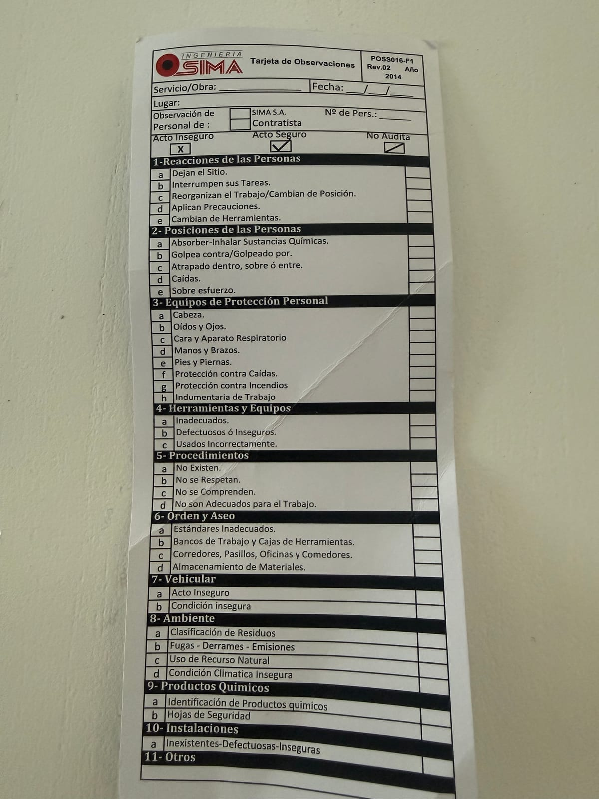
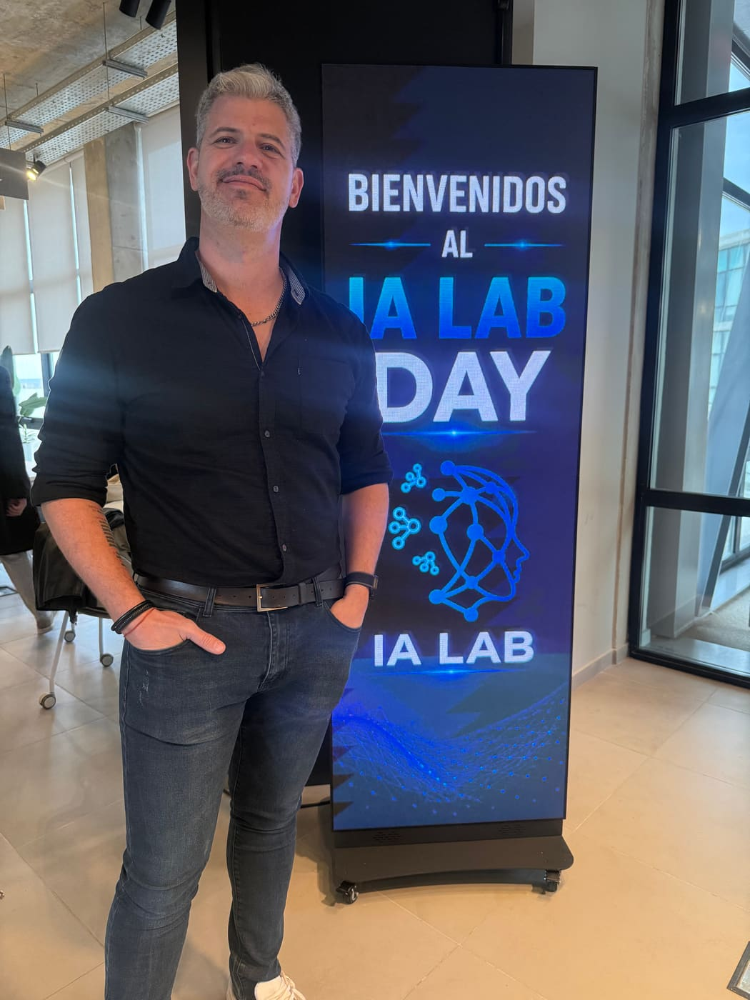

Cada incidente evitado que no se reporta es aprendizaje que la organización pierde. Hicimos que reportarlo cueste lo mismo que mandar un WhatsApp.
Qué hicimos y por qué

Cómo funciona
🔒 Anónimo como la tarjeta de papel: el número de teléfono nunca se guarda. La clasificación usa la misma taxonomía del formulario POSS016-F1 — el papel sigue valiendo, la foto es el puente.
🎯 Participá ahora
Stack tecnológico
El costo de experimentar es cero. La barrera ya no es el presupuesto: es animarse a probar.
Beneficios · Estado · Camino
Dashboard en vivo

COMPETIR
Y COMPARTIR
Gracias · Polo Científico Tecnológico Neuquén · ENE IA LAB · Vertical HSE